runs / 2026-10-20 / 020339-516000-baseline-eb21b446
単一HTMLで五重塔ボクセル庭園を生成、34分で完了・成果59KB
qwen3.8-flash-next-unsloth-ud-q4_k_xl（thinking high）が単一HTMLのボクセル五重塔庭園課題を受け、67 呼び出し・91,321 出力トークン・2,038 秒で completed / exit 0 とした。write 4 部の分割生成→bash 結合で index.html（59,448 バイト）を作り、以降は静的修正と headless ブラウザでのスクリーンショット検証・微調整に約14分を費やした。
成果物
work/index.html（59,448 バイト）をそのまま同梱している。重いシーンもあるため、必要なときだけ起動する。
index.html
58 KB · 起動するまで読み込まない
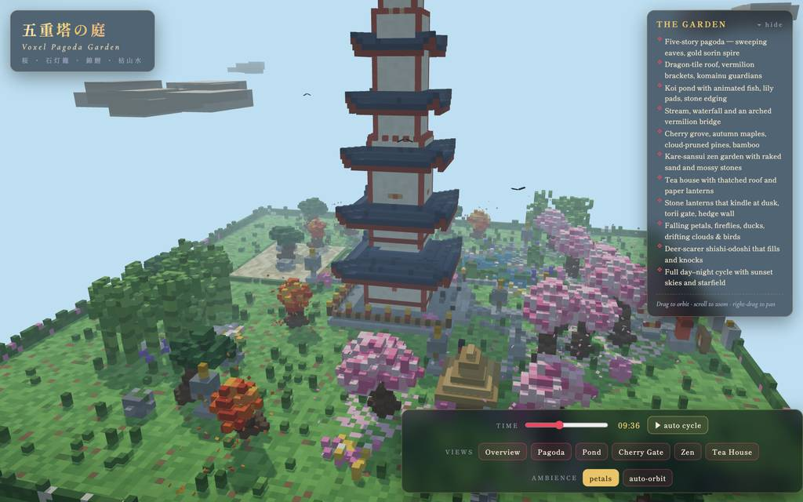
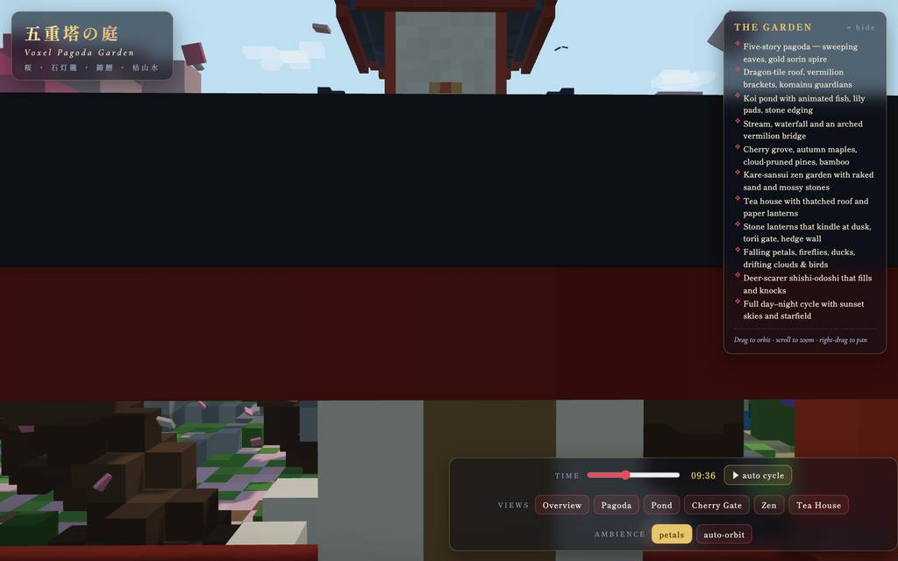
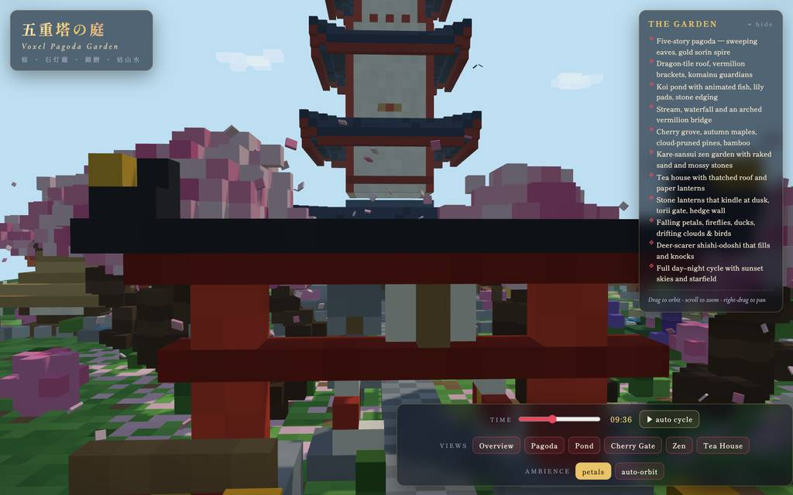
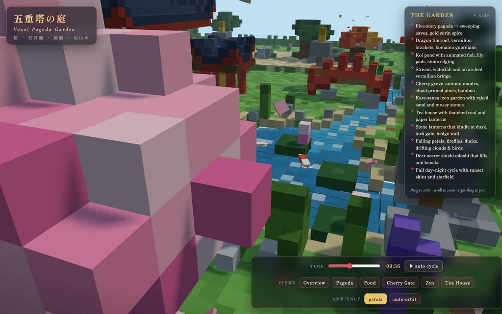
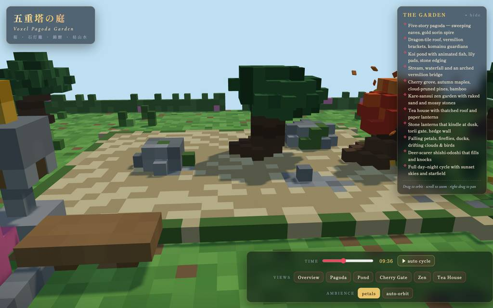
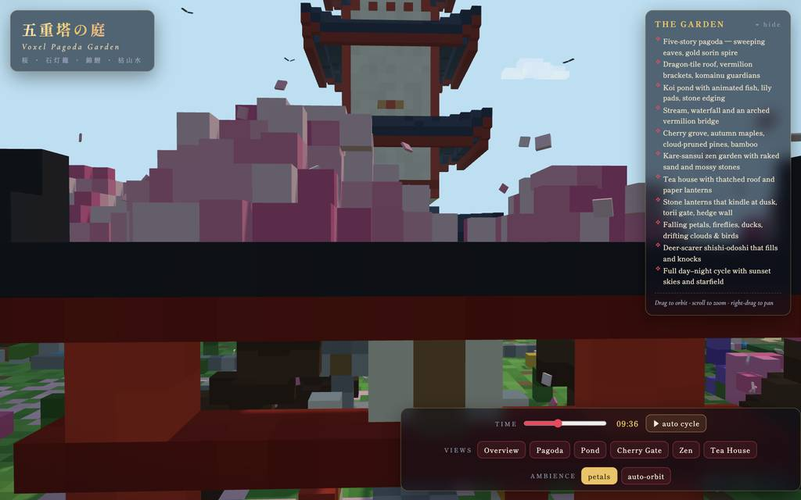
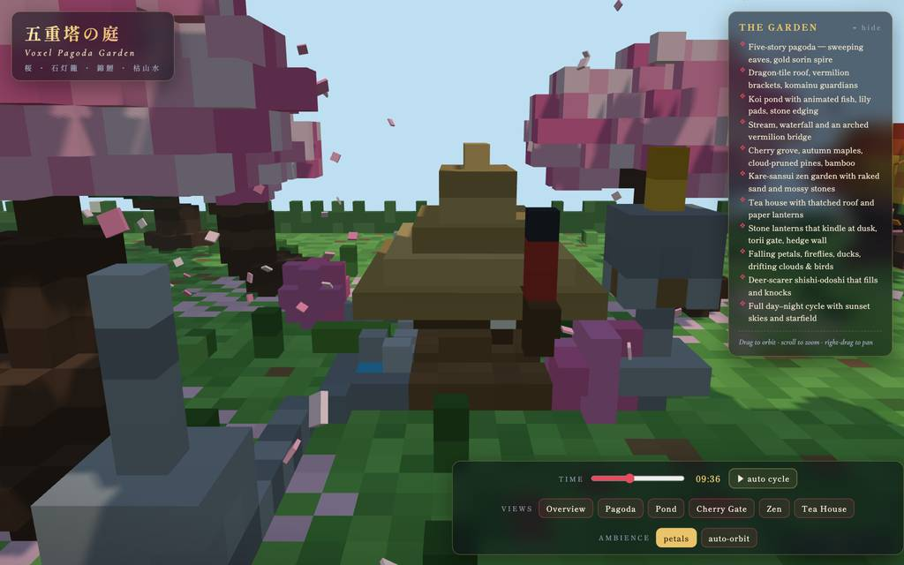
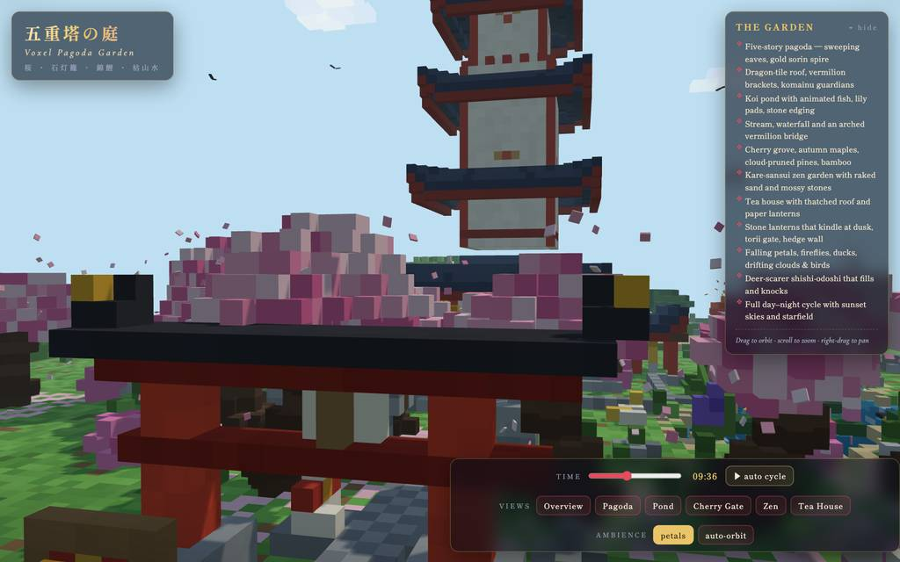
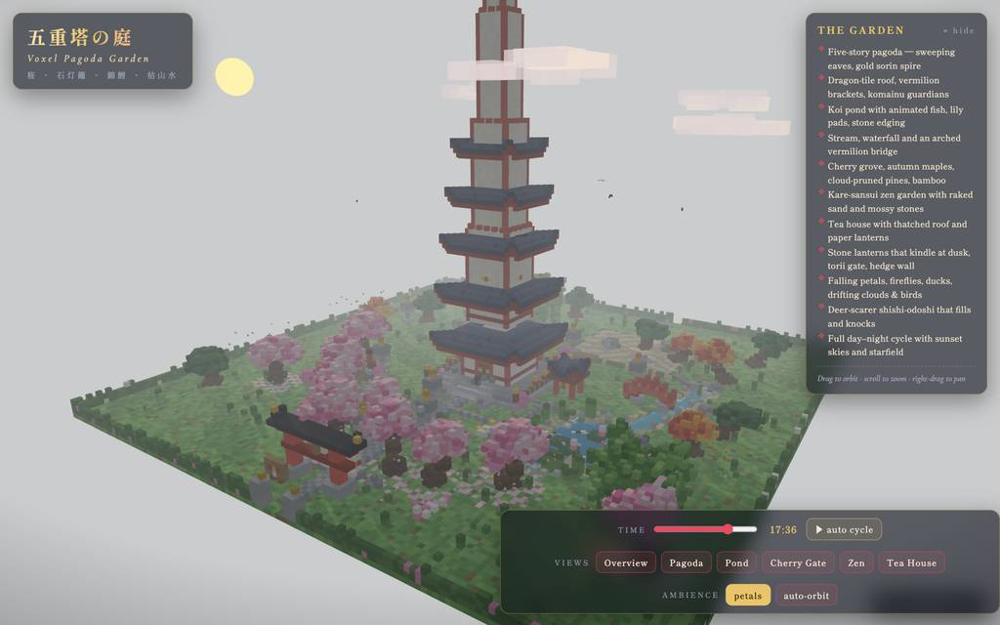
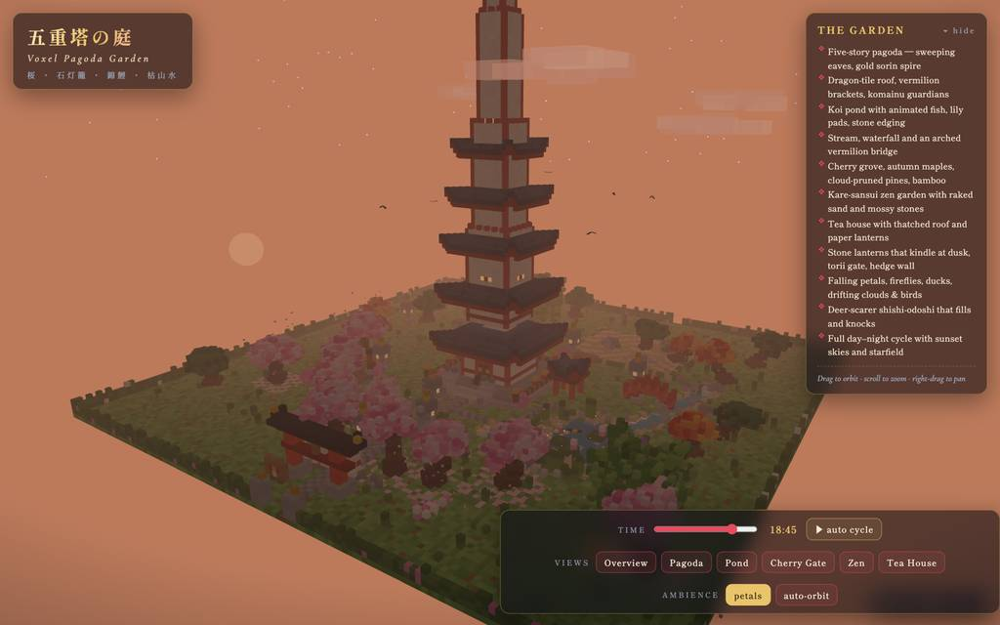
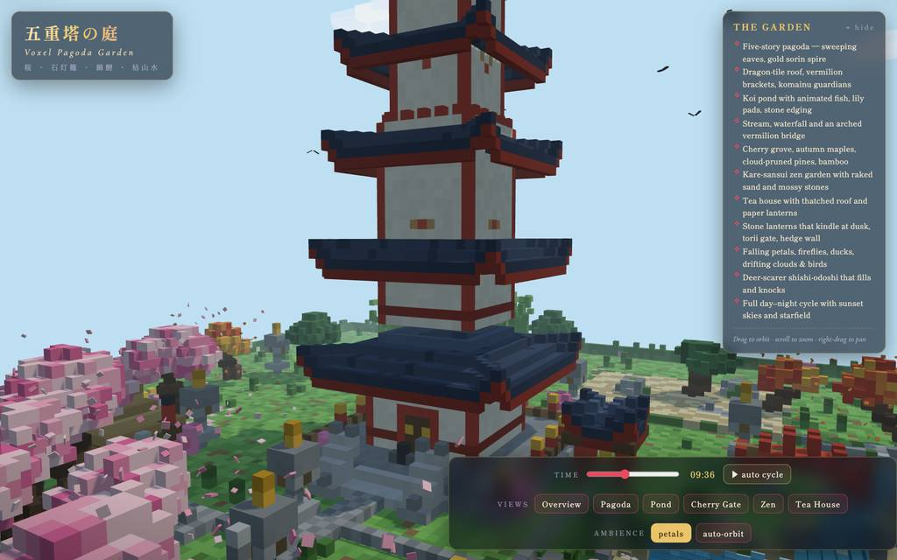
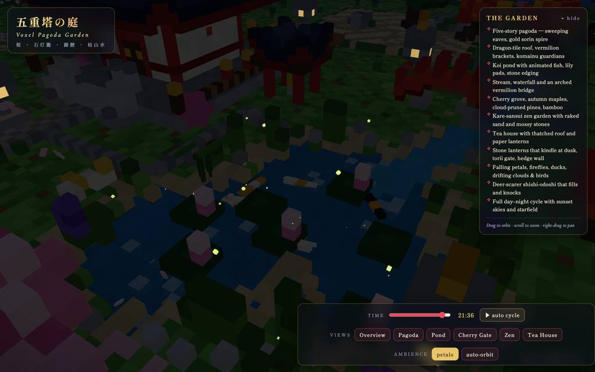
全 33 枚から等間隔に 12 枚を選んでいる。logs/events.jsonl の画像ブロックを内容ハッシュで重複排除して時系列に並べた、制作中の検証用スクリーンショット。最終版とは限らない。
成果物の構成
| 要素 | 内容 |
|---|---|
| 五重塔 | 二段石基、朱の隅柱、組物、発光窓抜き漆喰壁、反り上が五重、龍瓦、金銅の九輪と宝珠、南階段、香炉、狛犬、釣鐘の鐘楼 |
| 鯉池と流れ | 揺らぐ岸線、深浅の水面、楕円軌道で尾を振る鯉 6 匹 3 色、睡蓮、石縁、飛び石、滝口の泡、欄干付き朱の太鼓橋 |
| 植栽 | 桜 10 本（層状のピンクの梢・根張り・散り花瓣の絨毯）、紅葉の楓、仕立て松、竹藪 2 箇所、皐月、菖蒲、芦、草叢 |
| 庭の構造物 | 袖付き鳥居、分岐する飛石回道、波状砂紋と苔石の枯山水、縁側と提灯付き茅葺茶室、石灯籠 8 基、卒塔婆、狐像、蹲踞、柱門付き生垣 |
| 生命と雰囲気 | 樹区あたり 560 個の落花/紅葉、夕暮れ後のみホタル 42 羽、突く鴨、塔を周回する鳥、二色雲、9 秒周期の鹿威し |
| 昼夜サイクル | 日の出から星まで、日月円盤・色調補正空・霧・影光源、夜は提灯/窓/宝珠が揺らめき点光源が道に滲む |
| 操作系 | ドラッグ/スクロールで飛行、時間スライダー+自動、カメラ 6 プリセット、花瓣・自動回転トグル、折りたたみ機能カード、fps/ボクセルメータ、CDN フェイルセーフ |
| 性能・検証 | Three.js r160（CDN importmap）、約 35,000 インスタンスボクセルを 3 ドローコールに統合、headless Chromium で 76fps・コンソールエラーゼロ確認、単一ファイル約 59KB |
モデルの最終メッセージから読み取った内容。コードの確認はしていない。
タイムライン
67 回の API 呼び出しを時間順に並べた。上段の帯の幅が各呼び出しの所要時間で、帯の間の空白がツールの実行時間。下段はその時点のコンテキスト長。
最も長い 2 回の生成（#1 410 秒・#4 230 秒）で 640.4 秒、壁時計の 31.4%。出力トークンの上位 4 回（#1・#4・#3・#5）で全体の 52.8%（48,184 / 91,321）。推論以外（ツール実行など）は約 150 秒（7%）。
フェーズ別の内訳
| フェーズ | 経過 | 所要 | 全体に占める割合 | 呼び出し | 出力 tok | 何をしたか |
|---|---|---|---|---|---|---|
| 初期生成 | 0:00–16:31 | 991 秒 | 48.7% | 5 | 53,970 | #1〜#4 の write で HTML の head・地形/建築・植物/小道具・scene 組立ループの 4 部を分割生成し、#5 の bash で index.html に連結した。計 991 秒・53,970 出力トークンを消費。 |
| 静的修正 | 16:31–19:32 | 181 秒 | 8.9% | 20 | 7,972 | read/grep で該当箇所を特定し、屋根の dead code、四方向の tier walls、trunk の return 順序、提灯の開口、塀、setTOD、水面、koi/duck など複数を edit で修正。#25 の bash で抽出モジュールの構文チェックを行った。 |
| ブラウザ初検 | 19:32–20:14 | 42 秒 | 2.1% | 5 | 1,417 | browser device の doc を読んだ後、#27 の eval でページを開き TypeError を検出、#28/#29 でページ状態を確認し、#30 で全体スクリーンショットを撮影した。 |
| 視覚調整 | 20:14–33:19 | 785 秒 | 38.5% | 34 | 26,551 | 雲、カメラ位置、地面の雑草、禅の砂模様、桜の位置、夜の照明などを grep→edit→eval(shot) のループで反復調整した。long-thinking な grep を挟みつつ全 33 ショットをここで撮影。 |
| 最終確認 | 33:19–33:57 | 38 秒 | 1.9% | 3 | 1,411 | #65 の bash で足場を除去して成果物を確認し、#66 でブラウザタブを閉じ、#67 で最終レポートを出力した。 |
フェーズの切れ目は、ログから読み取れる作業内容の変わり目（LLM による区切り）。所要時間は、そのフェーズの最初の呼び出しの開始から次のフェーズの最初の呼び出しの開始まで。
67 回の呼び出しを表で見る
| # | 種別 | フェーズ | 開始 | 所要 秒 | prompt | うち cache | 出力 | tok/s | HTTP | ツール |
|---|---|---|---|---|---|---|---|---|---|---|
| 1 | 主ループ | 初期生成 | 0:00 | 410.3 | 7,805 | 0 | 21,509 | 52.9 | 200 | write |
| 2 | 主ループ | 初期生成 | 6:50 | 100.4 | 29,354 | 7,800 | 5,786 | 62.8 | 200 | write |
| 3 | 主ループ | 初期生成 | 8:31 | 112.7 | 35,181 | 35,139 | 6,710 | 59.9 | 200 | write |
| 4 | 主ループ | 初期生成 | 10:24 | 230.1 | 41,932 | 41,892 | 13,357 | 58.2 | 200 | write |
| 5 | 主ループ | 初期生成 | 14:14 | 137.2 | 55,329 | 41,927 | 6,608 | 50.2 | 200 | bash |
| 6 | 主ループ | 静的修正 | 16:31 | 10.7 | 61,958 | 61,936 | 504 | 49.0 | 200 | read |
| 7 | 主ループ | 静的修正 | 16:42 | 10.4 | 64,704 | 62,462 | 480 | 56.2 | 200 | edit + edit |
| 8 | 主ループ | 静的修正 | 16:52 | 3.7 | 65,744 | 65,185 | 104 | 42.4 | 200 | read |
| 9 | 主ループ | 静的修正 | 16:56 | 6.2 | 67,467 | 65,848 | 231 | 53.6 | 200 | read |
| 10 | 主ループ | 静的修正 | 17:02 | 8.9 | 68,021 | 67,697 | 460 | 58.3 | 200 | edit |
| 11 | 主ループ | 静的修正 | 17:11 | 5.2 | 69,070 | 68,480 | 169 | 44.5 | 200 | read |
| 12 | 主ループ | 静的修正 | 17:16 | 11.9 | 70,083 | 69,239 | 516 | 49.2 | 200 | edit |
| 13 | 主ループ | 静的修正 | 17:28 | 7.0 | 70,713 | 70,598 | 343 | 54.4 | 200 | edit |
| 14 | 主ループ | 静的修正 | 17:36 | 7.1 | 71,369 | 71,058 | 297 | 48.7 | 200 | edit + read |
| 15 | 主ループ | 静的修正 | 17:43 | 15.7 | 72,525 | 71,665 | 763 | 53.5 | 200 | edit |
| 16 | 主ループ | 静的修正 | 17:58 | 7.1 | 73,674 | 73,288 | 293 | 49.4 | 200 | grep |
| 17 | 主ループ | 静的修正 | 18:06 | 6.0 | 74,773 | 73,967 | 217 | 46.9 | 200 | read |
| 18 | 主ループ | 静的修正 | 18:12 | 18.5 | 76,045 | 74,990 | 905 | 53.8 | 200 | edit |
| 19 | 主ループ | 静的修正 | 18:30 | 6.8 | 77,486 | 76,950 | 257 | 46.3 | 200 | edit |
| 20 | 主ループ | 静的修正 | 18:37 | 2.7 | 77,934 | 77,743 | 98 | 56.8 | 200 | grep |
| 21 | 主ループ | 静的修正 | 18:40 | 19.2 | 78,702 | 78,031 | 912 | 51.5 | 200 | edit |
| 22 | 主ループ | 静的修正 | 18:59 | 7.9 | 79,860 | 79,616 | 343 | 50.0 | 200 | edit |
| 23 | 主ループ | 静的修正 | 19:07 | 5.8 | 80,352 | 80,205 | 257 | 51.8 | 200 | read |
| 24 | 主ループ | 静的修正 | 19:13 | 9.2 | 81,185 | 80,608 | 394 | 50.7 | 200 | edit |
| 25 | 主ループ | 静的修正 | 19:22 | 9.6 | 82,280 | 81,580 | 429 | 51.9 | 200 | bash |
| 26 | 主ループ | ブラウザ初検 | 19:32 | 2.1 | 82,734 | 82,710 | 78 | 49.2 | 200 | read |
| 27 | 主ループ | ブラウザ初検 | 19:34 | 6.8 | 85,852 | 82,811 | 267 | 55.7 | 200 | eval |
| 28 | 主ループ | ブラウザ初検 | 19:47 | 5.3 | 86,433 | 86,118 | 224 | 51.8 | 200 | eval |
| 29 | 主ループ | ブラウザ初検 | 19:52 | 6.2 | 86,841 | 86,657 | 300 | 54.9 | 200 | eval |
| 30 | 主ループ | ブラウザ初検 | 19:59 | 11.4 | 87,212 | 87,140 | 548 | 50.8 | 200 | eval |
| 31 | 主ループ | 視覚調整 | 20:14 | 31.2 | 88,514 | 87,762 | 1,441 | 48.6 | 200 | edit |
| 32 | 主ループ | 視覚調整 | 20:45 | 2.6 | 89,978 | 89,956 | 116 | 51.5 | 200 | grep |
| 33 | 主ループ | 視覚調整 | 20:48 | 11.0 | 90,678 | 90,094 | 510 | 51.9 | 200 | edit |
| 34 | 主ループ | 視覚調整 | 20:59 | 7.5 | 91,351 | 91,188 | 359 | 55.2 | 200 | edit |
| 35 | 主ループ | 視覚調整 | 21:06 | 8.1 | 92,158 | 91,712 | 343 | 50.6 | 200 | eval |
| 36 | 主ループ | 視覚調整 | 21:25 | 22.9 | 93,980 | 92,503 | 1,010 | 48.4 | 200 | edit |
| 37 | 主ループ | 視覚調整 | 21:48 | 5.1 | 95,044 | 94,989 | 227 | 55.7 | 200 | grep |
| 38 | 主ループ | 視覚調整 | 21:53 | 7.1 | 95,649 | 95,270 | 307 | 51.0 | 200 | edit |
| 39 | 主ループ | 視覚調整 | 22:00 | 8.7 | 96,355 | 95,956 | 396 | 53.3 | 200 | eval |
| 40 | 主ループ | 視覚調整 | 22:21 | 65.1 | 98,300 | 41,927 | 2,065 | 49.0 | 200 | grep |
| 41 | 主ループ | 視覚調整 | 23:26 | 7.7 | 100,708 | 100,365 | 362 | 55.6 | 200 | edit |
| 42 | 主ループ | 視覚調整 | 23:34 | 8.7 | 101,667 | 101,070 | 397 | 53.4 | 200 | eval |
| 43 | 主ループ | 視覚調整 | 23:58 | 61.8 | 102,412 | 88,007 | 2,743 | 49.7 | 200 | edit |
| 44 | 主ループ | 視覚調整 | 25:00 | 7.4 | 105,599 | 105,155 | 316 | 51.2 | 200 | grep |
| 45 | 主ループ | 視覚調整 | 25:07 | 7.8 | 106,450 | 105,914 | 381 | 57.5 | 200 | edit |
| 46 | 主ループ | 視覚調整 | 25:15 | 4.6 | 107,375 | 106,831 | 169 | 51.3 | 200 | edit |
| 47 | 主ループ | 視覚調整 | 25:19 | 7.4 | 107,650 | 107,546 | 368 | 55.9 | 200 | eval |
| 48 | 主ループ | 視覚調整 | 25:44 | 72.7 | 108,436 | 88,007 | 3,059 | 48.5 | 200 | grep |
| 49 | 主ループ | 視覚調整 | 26:57 | 7.3 | 111,980 | 111,495 | 346 | 57.6 | 200 | edit |
| 50 | 主ループ | 視覚調整 | 27:04 | 8.5 | 112,871 | 112,328 | 396 | 55.0 | 200 | eval |
| 51 | 主ループ | 視覚調整 | 27:31 | 63.8 | 113,716 | 88,007 | 2,455 | 47.4 | 200 | grep |
| 52 | 主ループ | 視覚調整 | 28:34 | 10.0 | 116,766 | 116,171 | 455 | 52.2 | 200 | edit |
| 53 | 主ループ | 視覚調整 | 28:44 | 7.4 | 117,244 | 117,221 | 388 | 55.6 | 200 | edit |
| 54 | 主ループ | 視覚調整 | 28:52 | 9.9 | 118,469 | 117,634 | 455 | 54.2 | 200 | eval |
| 55 | 主ループ | 視覚調整 | 29:17 | 59.4 | 119,303 | 88,007 | 2,214 | 49.1 | 200 | edit |
| 56 | 主ループ | 視覚調整 | 30:17 | 8.8 | 121,717 | 121,517 | 472 | 59.8 | 200 | eval |
| 57 | 主ループ | 視覚調整 | 30:38 | 49.7 | 122,479 | 88,007 | 1,594 | 46.3 | 200 | grep |
| 58 | 主ループ | 視覚調整 | 31:28 | 16.0 | 124,549 | 124,073 | 778 | 52.5 | 200 | edit |
| 59 | 主ループ | 視覚調整 | 31:44 | 3.2 | 125,858 | 125,329 | 93 | 47.7 | 200 | grep |
| 60 | 主ループ | 視覚調整 | 31:47 | 2.8 | 126,056 | 125,951 | 115 | 58.7 | 200 | edit |
| 61 | 主ループ | 視覚調整 | 31:50 | 8.0 | 126,262 | 126,171 | 398 | 56.3 | 200 | eval |
| 62 | 主ループ | 視覚調整 | 32:13 | 45.9 | 127,026 | 88,007 | 1,360 | 47.7 | 200 | edit |
| 63 | 主ループ | 視覚調整 | 32:59 | 2.7 | 128,528 | 128,386 | 102 | 57.5 | 200 | edit |
| 64 | 主ループ | 視覚調整 | 33:02 | 7.8 | 128,800 | 128,632 | 361 | 54.2 | 200 | eval |
| 65 | 主ループ | 最終確認 | 33:19 | 21.2 | 129,360 | 111,047 | 598 | 48.7 | 200 | bash |
| 66 | 主ループ | 最終確認 | 33:40 | 2.8 | 130,067 | 129,960 | 94 | 45.9 | 200 | eval |
| 67 | 主ループ | 最終確認 | 33:43 | 14.2 | 130,184 | 130,163 | 719 | 52.3 | 200 |
試行錯誤
ツールがエラー（isError）を返した結果の一覧。ツールは成功したのにモデル自身が内容を壊したケースは、ここには出ない。
エラーとして記録された 12 件
| 経過 | ツール | 起きたこと | 分類 |
|---|---|---|---|
| 16:52 | edit | PUT の 380 行目ブロックアンカーが構文ブロックとして解釈できず edit が失敗し、明示的行指定を求められた。line 1: `PUT 380*:` could not resolve a syntactic block beginning on line 380 (unsupported language, blank/closer line, or parse error). Use `PUT 380.=M:` with explicit lines. 378:} 379:function tierW | ブロック解決不能 |
| 17:28 | edit | 204 行目（trunk の return）の PUT ブロックアンカーが同様に解決できず失敗。line 1: `PUT 204*:` could not resolve a syntactic block beginning on line 204 (unsupported language, blank/closer line, or parse error). Use `PUT 204.=M:` with explicit lines. 202: } 203: } *204: retu | ブロック解決不能 |
| 18:37 | edit | read で表示していない 816〜818 行を編集対象にし、実ファイル内容と不一致で弾かれた。This edit anchors to lines 816-818 of index.html that [index.html#CBEB] never displayed (it showed a partial range, a search hit, or a folded summary). Actual file content at those lines: 816: waterMe | アンカー未確認 |
| 18:59 | edit | 1029 行目の PUT ブロックアンカーが構文ブロックとして解決できず失敗。line 8: `PUT 1029*:` could not resolve a syntactic block beginning on line 1029 (unsupported language, blank/closer line, or parse error). Use `PUT 1029.=M:` with explicit lines. 1027: const u=d.userD | ブロック解決不能 |
| 19:07 | edit | スナップショットで未表示の 1020 行目をアンカーにし不一致で失敗。This edit anchors to lines 1020 of index.html that [index.html#CBEB] never displayed (it showed a partial range, a search hit, or a folded summary). Actual file content at those lines: 1020: const hx= | アンカー未確認 |
| 19:41 | eval | ブラウザ起動時のページで TypeError: (cons||[]).slice is not a function が発生。Opened tab "vox" on headless browser (hidden, shared) URL: file://~ Title: 五重塔の庭 — Voxel Pagoda Garden TypeError: (cons||[]).slice is not a function. (In '(cons||[]).slice(0,20)', '(cons||[]). | 実行時エラー |
| 19:52 | eval | eval 実行で ReferenceError: document is not defined、別スコープで再試行。ReferenceError: document is not defined at <anonymous> (browser-run-15ac997ca73f276a.js:3:21) at <anonymous> (browser-run-15ac997ca73f276a.js:8:3) at <anonymous> (browser-run-15ac997ca73f276a.js:9:3) | eval 誤用 |
| 20:45 | edit | 入力にハッシュラインのセクションがなく edit が拒否された。No hashline sections found in input. | edit 入力不備 |
| 20:59 | edit | 865 行目（clouds 直前）の PUT ブロックアンカーが解決できず失敗。line 1: `PUT 865*:` could not resolve a syntactic block beginning on line 865 (unsupported language, blank/closer line, or parse error). Use `PUT 865.=M:` with explicit lines. 863: 864: /* ---- clouds | ブロック解決不能 |
| 21:48 | edit | C286 のハッシュラインスナップショットタグが欠落し edit が拒否された。Missing hashline snapshot tag for C286; use `[C286#tag]` from your latest read/search output. To create a new file, use the write tool. | edit 入力不備 |
| 28:44 | edit | 入力にハッシュラインセクションが見つからず edit が失敗（E8 と同型）。No hashline sections found in input. | edit 入力不備 |
| 32:59 | edit | スナップショットで未表示の 1099 行目（pond カメラ）をアンカーにし失敗。This edit anchors to lines 1099 of index.html that [index.html#19AF] never displayed (it showed a partial range, a search hit, or a folded summary). Actual file content at those lines: 1099: {p:[40,10 | アンカー未確認 |
経過は、そのツールを呼んだターンの終了時刻。エラー本文は先頭 300 文字までで、パスや接続先は伏せてある。
気づいた点
計測データ（呼び出し一覧・エラー・最終メッセージ）だけから LLM が書いた読み取り。文中の数値は、上の KPI や表と照らして確認する。
生成が時間の半分
#1〜#5 の 5 呼び出しで 991 秒（総計 2,038 秒の 49%）、出力 53,970 トークン（総計 91,321 の 59%）を占めた。うち #1 の単独呼び出しが 410.3 秒・21,509 トークンで HTML head 中核を書いている。ピークコンテキストは 130,184 とウィンドウ 1,048,576 の約 12% にとどまった。
edit 失敗 8 件と復旧
12 件のエラーのうち 8 件が edit のアンカー/入力不備（E1〜E5, E8〜E12）。E1 の直後 #8/#9 で再 read してから #10 で置換、E3 の後は #20 で grep して行番号を取り直し #22 で明示的行指定で再試行、E12 の後は #63 で再試行と、いずれも読み直し→明示指定で回復している。
調整ループの長考
視覚調整 #31〜#64 は grep→edit→eval の反復で、#40/#48/#51/#55 の grep 呼び出しは 59.4〜72.7 秒かけて 2,065〜3,059 出力トークンを生成しており、次の編集対象を決める思考に時間を割いた。14 回の eval で計 33 ショットを撮影して結果を確認した。
初検で実行時エラー
#27（t=1181s）の eval でページ起動時に TypeError: (cons||[]).slice is not a function（E6）を検出し、以後の edit で修正、最終メッセージではコンソールエラーゼロを報告。#29 付近のページ状態確認では document 未定義の ReferenceError（E7）があり、やり方を変えて再試行した。
入力と設定
Design and create a very creative, elaborate, and detailed voxel art scene of a pagoda in a beautiful garden with trees, including some cherry blossoms. Make the scene impressive and varied and use colorful voxels. Add as many details as possible to showcase your attention to them. Use whatever libraries to get this done but make sure I can paste it all into a single HTML file.
input/prompt.md の全文。SHA-256 は ceece4685b37…。
| omp の起動オプション | --print --mode json --thinking high --no-title --approval-mode yolo |
| upstream | （接続先は伏せている） |
| タイムアウト | 10,800 秒 |
config/00-omp.yml
setupVersion: 2 autolearn: enabled: false autoContinue: false